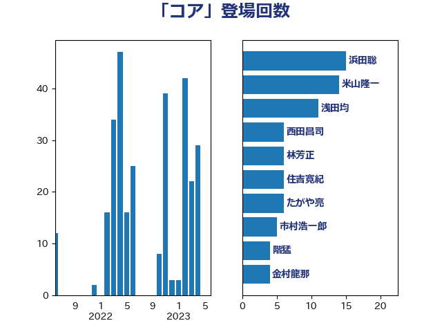

単語「コア」

| 浜田聡 | NHK党 | 15 回 |
| 浅田均 | 日本維新の会 | 8 回 |
| たがや亮 | れいわ新選組 | 6 回 |
| 西田昌司 | 自由民主党 | 6 回 |
| 市村浩一郎 | 日本維新の会 | 5 回 |
| 仁木博文 | 無所属 | 4 回 |
| 小林鷹之 | 自由民主党 | 4 回 |
| 玉木雄一郎 | 国民民主党 | 4 回 |
| 萩生田光一 | 自由民主党 | 4 回 |
| 高木啓 | 自由民主党 | 4 回 |
| 和田政宗 | 自由民主党 | 3 回 |
| 小泉進次郎 | 自由民主党 | 3 回 |
| 山際大志郎 | 自由民主党 | 3 回 |
| 田村智子 | 日本共産党 | 3 回 |
| 茂木敏充 | 自由民主党 | 3 回 |
| 足立康史 | 日本維新の会 | 3 回 |
| 尾身朝子 | 自由民主党 | 2 回 |
| 山口壯 | 自由民主党 | 2 回 |
| 山添拓 | 日本共産党 | 2 回 |
| 新藤義孝 | 自由民主党 | 2 回 |
| 橋本聖子 | 無所属 | 2 回 |
| 武村展英 | 自由民主党 | 2 回 |
| 浮島智子 | 公明党 | 2 回 |
| 渡辺周 | 立憲民主党 | 2 回 |
| 牧島かれん | 自由民主党 | 2 回 |
| 福島伸享 | 無所属 | 2 回 |
| 緑川貴士 | 立憲民主党 | 2 回 |
| 船橋利実 | 自由民主党 | 2 回 |
| 菅義偉 | 自由民主党 | 2 回 |
| 鈴木義弘 | 国民民主党 | 2 回 |
| 青柳仁士 | 日本維新の会 | 2 回 |
| 上田清司 | 国民民主党 | 1 回 |
| 上野通子 | 自由民主党 | 1 回 |
| 下条みつ | 立憲民主党 | 1 回 |
| 中西祐介 | 自由民主党 | 1 回 |
| 井坂信彦 | 立憲民主党 | 1 回 |
| 伊佐進一 | 公明党 | 1 回 |
| 伊藤孝恵 | 国民民主党 | 1 回 |
| 古川俊治 | 自由民主党 | 1 回 |
| 吉川ゆうみ | 自由民主党 | 1 回 |
| 吉田とも代 | 日本維新の会 | 1 回 |
| 小田原潔 | 自由民主党 | 1 回 |
| 山崎誠 | 立憲民主党 | 1 回 |
| 山田太郎 | 自由民主党 | 1 回 |
| 岡田克也 | 立憲民主党 | 1 回 |
| 岸田文雄 | 自由民主党 | 1 回 |
| 岸真紀子 | 立憲民主党 | 1 回 |
| 平井卓也 | 自由民主党 | 1 回 |
| 後藤祐一 | 立憲民主党 | 1 回 |
| 後藤茂之 | 自由民主党 | 1 回 |
| 打越さく良 | 立憲民主党 | 1 回 |
| 有村治子 | 自由民主党 | 1 回 |
| 松本尚 | 自由民主党 | 1 回 |
| 林芳正 | 自由民主党 | 1 回 |
| 河野太郎 | 自由民主党 | 1 回 |
| 清水貴之 | 日本維新の会 | 1 回 |
| 田村憲久 | 自由民主党 | 1 回 |
| 石井章 | 日本維新の会 | 1 回 |
| 石川昭政 | 自由民主党 | 1 回 |
| 福田昭夫 | 立憲民主党 | 1 回 |
| 笠井亮 | 日本共産党 | 1 回 |
| 舟山康江 | 国民民主党 | 1 回 |
| 野田聖子 | 自由民主党 | 1 回 |
| 鈴木俊一 | 自由民主党 | 1 回 |
| 阿達雅志 | 自由民主党 | 1 回 |
| 阿部知子 | 立憲民主党 | 1 回 |
| 高橋光男 | 公明党 | 1 回 |